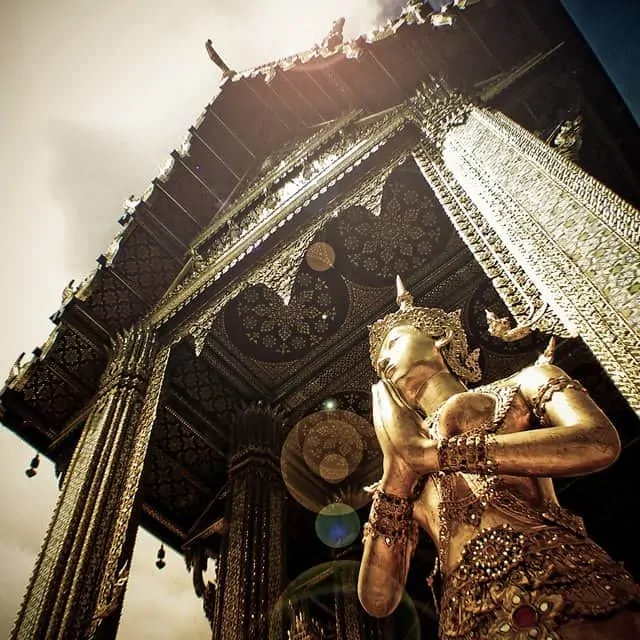
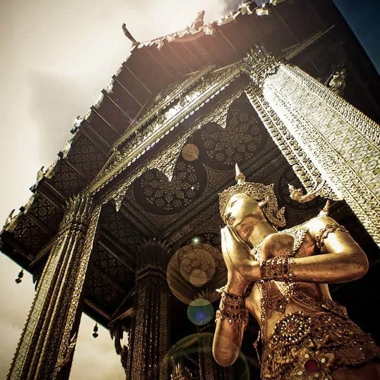
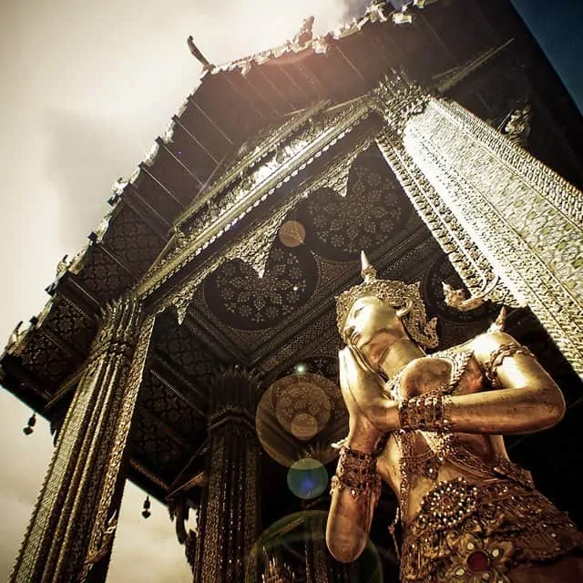

 Highlights include the impossibly bejeweled Grand Palace, Wat Arun (one of the oldest and best-known landmarks in Bangkok) and Wat Po which is home to a giant reclining Buddha.
Fun-seekers head for the notorious backpacker’s haven the Khao San road, the bazaars, and alleyways of Chinatown and the infamous Patpong Night Market (located in the city’s red-light district).')">


 
